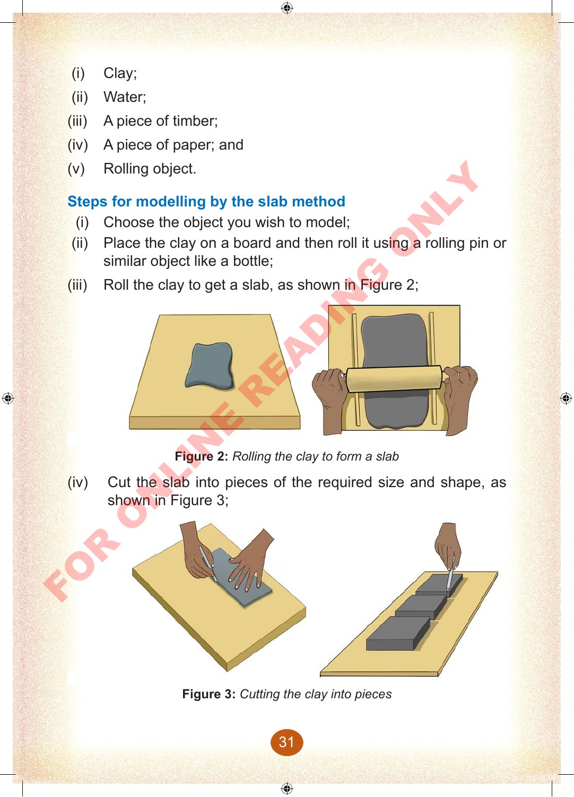
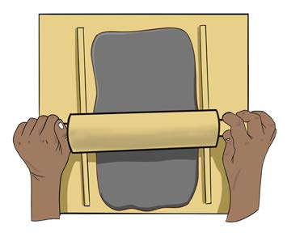
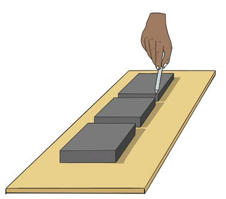

(i)
Clay;
(ii)
Water;
(iii)
A piece of timber;
(iv)
A piece of paper; and
(v)
Rolling object.
Steps for modelling by the slab method
(i)
Choose the object you wish to model;
(ii)
Place the clay on a board and then roll it using a rolling pin or similar object like a bottle;
(iii)
Roll the clay to get a slab, as shown in Figure 2;


Figure 2: Rolling the clay to form a slab
(iv)
Cut the slab into pieces of the required size and shape, as shown in Figure 3;


Figure 3: Cutting the clay into pieces